Kicad, PCB Fabrication, Soldering, LT-Spice
Kicad, PCB 制造, 焊接
During my internship at Progressive Technologies NZ, I designed and implemented a 12V lithium battery level monitoring system with visual LED indicators and a buzzer. The circuit also implemented an emergency relay cutoff to prevent damage from low-voltage conditions. This project included the complete PCB development lifecycle, designing and testing the circuit in LT-Spice, selecting the components, designing the PCB layout and optimizing it in KiCad, creating gerber files and sending the PCB to be made, soldering/testing the pcb, and manufacturing the PCB for the customer.
在我于 Progressive Technologies NZ 实习期间，我设计并实现了一套 12V 锂电池电量监测系统，该系统配有可视化 LED 指示灯和蜂鸣器。 该电路还集成了紧急继电器断电功能，以防止因低电压情况对设备造成损坏。 该项目涵盖了完整的 PCB 开发流程，包括：在 LT-Spice 中进行电路设计与仿真测试、元器件选型、在 KiCad 中进行 PCB 布局设计与优化、生成 Gerber 文件并发送制造、对 PCB 进行焊接与测试，以及最终为客户完成 PCB 的生产制造。
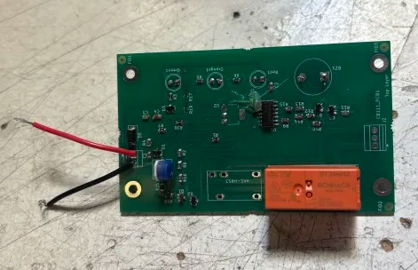
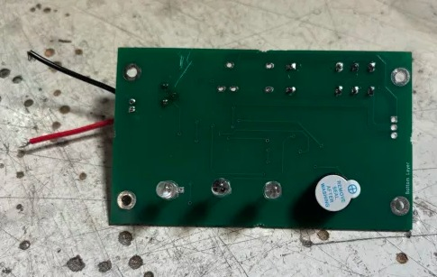
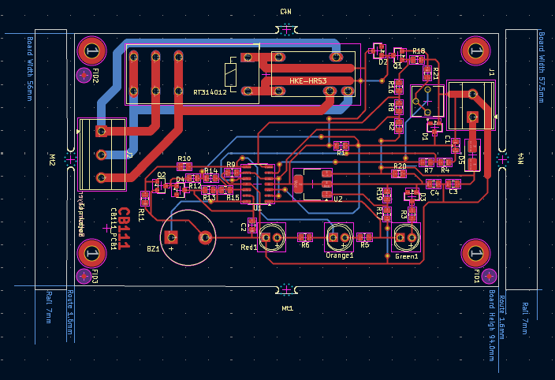
Altium Designer, PCB Fabrication, Soldering, PLECS
Altium Designer, PCB 制造, 焊接, PLECS
This project designs and develops a pocket-sized power supply that could replace the low-voltage power supply found on a typical work bench. The power supply is implemented by using a DC-DC flyback converter that produces an isolated output voltage that can be controlled by the user. This flyback converter takes in an input voltage of 20VDC and has an output voltage range from 5VDC to 30VDC. The output voltage and current is controlled by the user by controlling the switch of a flyback converter using PWM signals. The PWM signals are generated using a UC3843 IC as per the output of a PI Controller implemented on an ATMega328PB microcontroller.
本项目设计并开发了一款口袋尺寸的电源，可替代典型工作台上的低压电源。该电源通过采用 DC-DC 反激式变换器实现，能够提供与输入隔离且可由用户调节的输出电压。 该反激变换器的输入电压为 20VDC，输出电压范围为 5VDC 至 30VDC。 输出电压和电流由用户通过控制反激变换器开关的 PWM 信号来调节。PWM 信号由 UC3843 集成电路生成，并基于在 ATMega328PB 微控制器上实现的 PI 控制器输出进行控制。
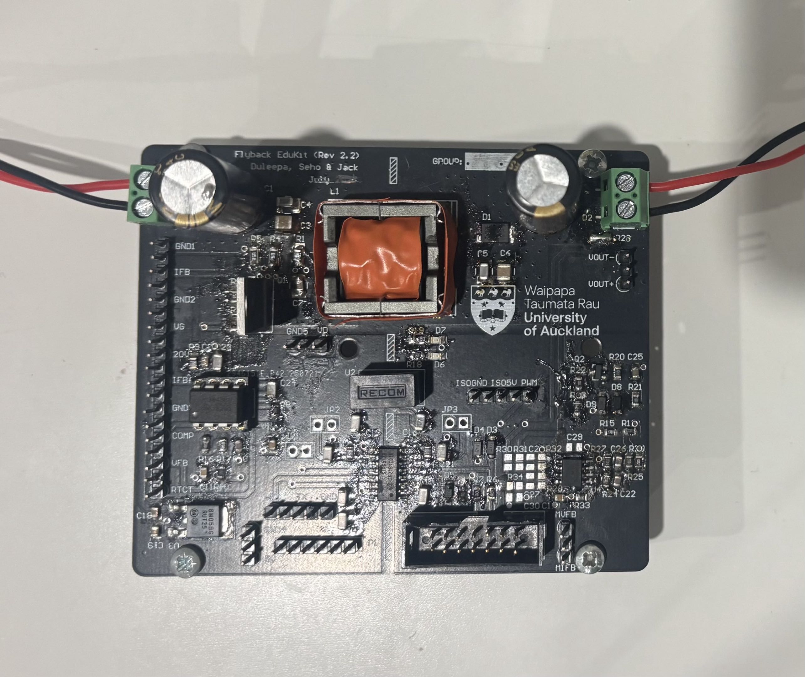
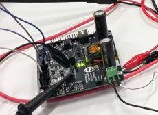
Soldering, Microcontroller Integration
焊接, 微控制器集成
Designed and assembled a FPV drone that uses brushless motors, ESCs, an ELRS receiver, and a flight controller. Performed system integration including calibration, PID tuning, and signal mapping. Implemented robust power distribution with LiPo interfacing and noise mitigation.
设计并组装了一台集成了无刷电机、电调 (ESC)、ELRS 接收机和飞行控制器的四旋翼无人机。完成了系统集成，包括校准、PID 调优和信号映射。实现了带有 LiPo 接口和噪声抑制功能的稳健配电系统。
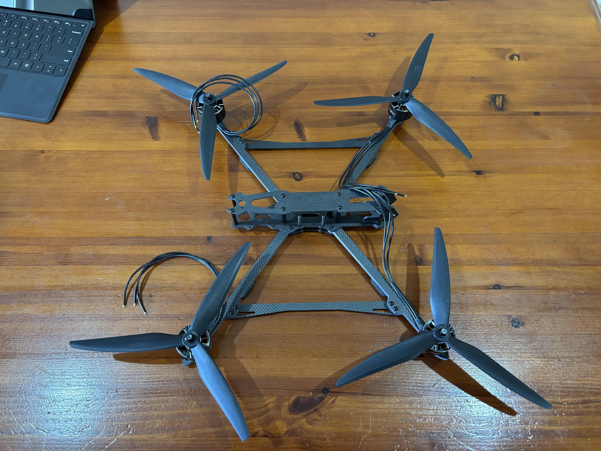
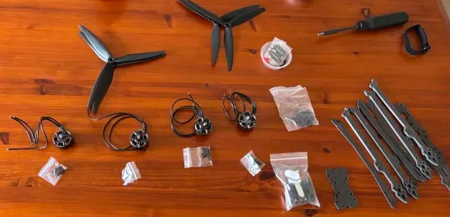
DIALux Evo
DIALux Evo
This design project involves evaluating the existing lighting system, designing a new energy-efficient lighting system that is compliant with AS/NZS 1680 standards, designing outdoor lighting, and implementing emergency lighting in accordance with F6/F8 sections of the NZ Building Code.
该设计项目包括评估现有照明系统，设计符合 AS/NZS 1680 标准的节能照明系统，进行室外照明设计，并根据新西兰建筑规范（NZ Building Code）F6/F8 条款实施应急照明系统。
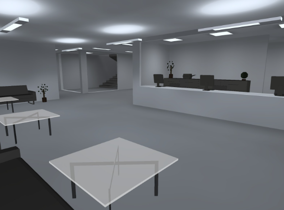
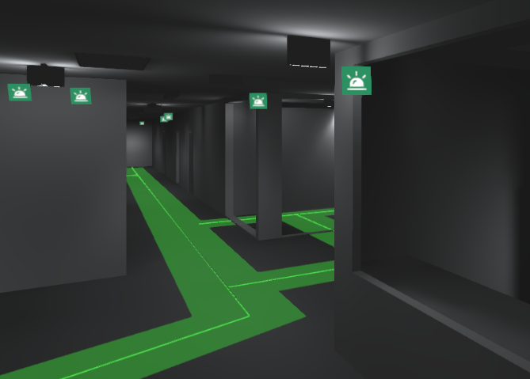
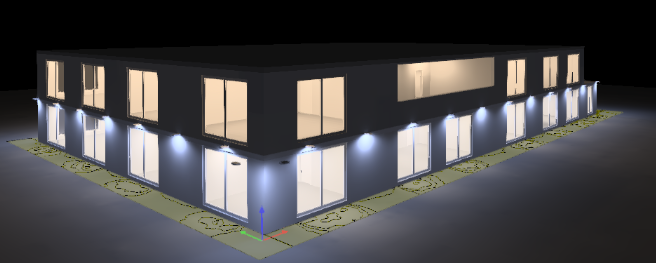
Soldering, KiCad, Autodesk Fusion 360, Metalworking
焊接, KiCad, Autodesk Fusion 360, 金属加工
At Progressive Technologies, I designed a Solar Panel DC Converter PCB that uses solar energy with battery storage to provide a reliable power supply for monitoring water levels in lakes and streams for local councils. I also contributed to mechanical CAD design, developing enclosures and mounting solutions that integrate electronics with real-world constraints. This included designing a weatherproof mounting system that positions the solar panel at an optimal 40° angle for maximum energy capture in New Zealand.
在 Progressive Technologies 任职期间，我设计了一款太阳能直流转换器 PCB，利用太阳能结合电池储能，为当地市政部门监测湖泊和河流水位提供可靠的电源。 我还参与了机械 CAD 设计，开发了外壳和安装方案，使电子系统能够适应实际应用环境的限制。这包括设计一套防水安装结构，使太阳能板以最佳的 40° 倾角安装， 以在新西兰获得最大的能量采集效率。
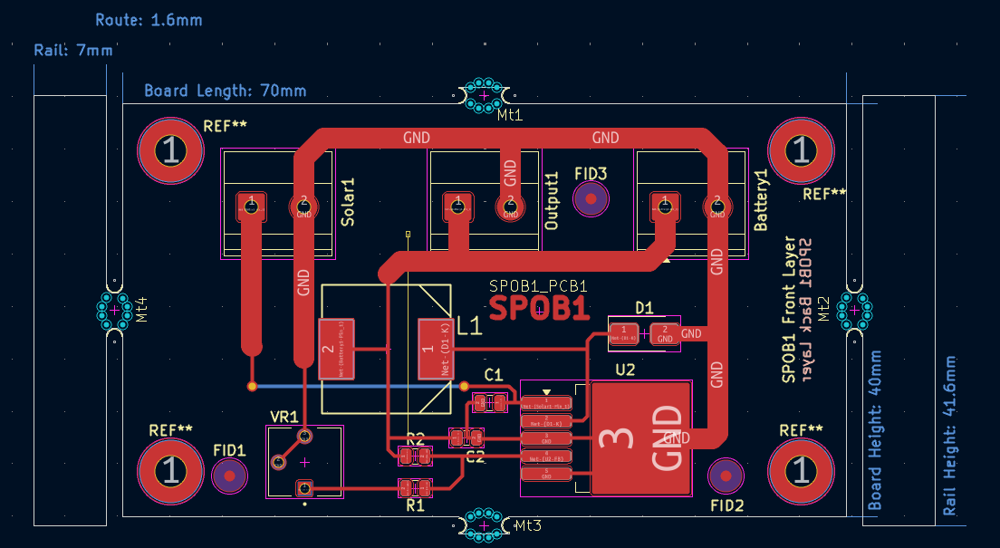
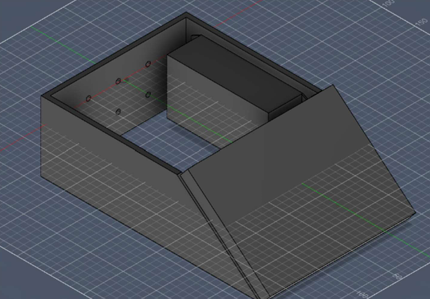
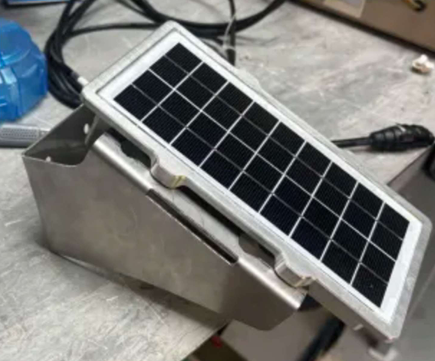
Soldering, Raspberry Pico, Altium Designer
焊接, Raspberry Pico, Altium Designer
The EVolocity program has New Zealand students design and race electric vehicles, but Race Day scoring is slowed by manual ECU data retrieval. This project introduces a wireless system that automatically collects and uploads data via UART or USB, achieving 128 kB/s over 10 m+. The system has precise sensing from an energy monitoring PCB, Raspberry Pi Pico W firmware, and a user-friendly dashboard, it reduced download time by over 80% with zero packet loss. The solution, improves accuracy, reduces delays and improves race day operations.
EVolocity 项目让新西兰学生设计并参加电动赛车比赛，但比赛日的评分过程因手动获取 ECU 数据而变得缓慢。 本项目提出了一种无线系统，可通过 UART 或 USB 自动采集并上传数据，在 10 米以上距离实现 128 kB/s 的传输速率。 该系统通过能源监测 PCB 实现高精度数据采集，并结合 Raspberry Pi Pico W 固件以及用户友好的数据可视化仪表盘 该方案将数据下载时间减少了 80% 以上，并实现了零数据包丢失。 该解决方案提高了数据准确性，减少了延迟，并优化了比赛日的整体运行效率。
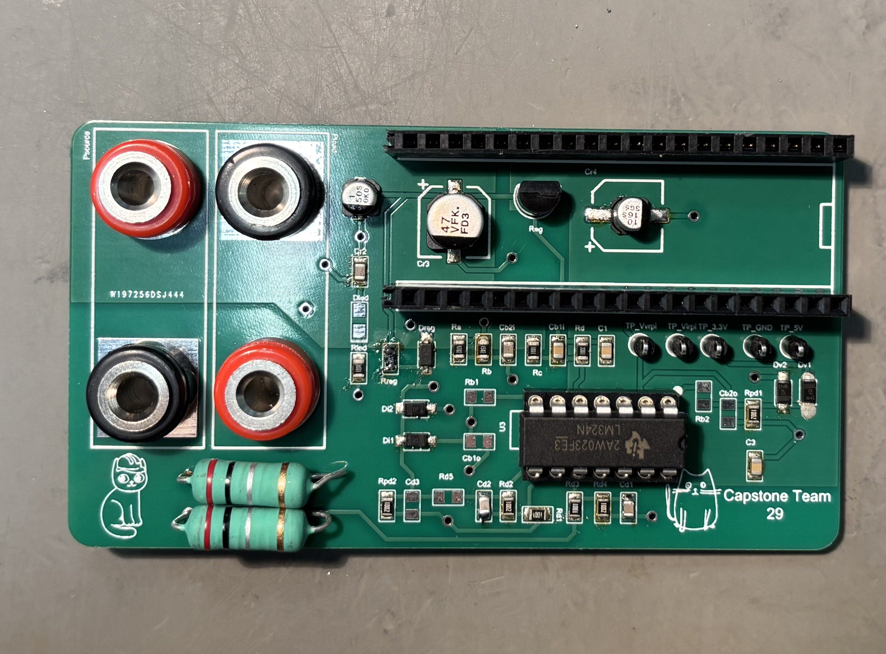
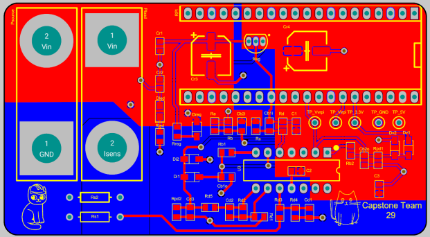
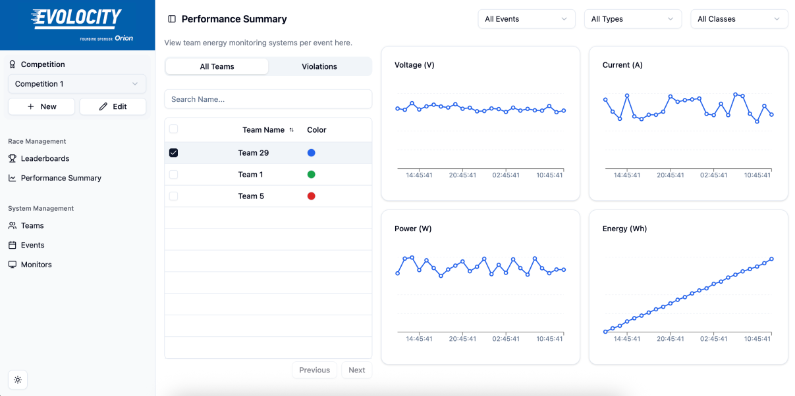